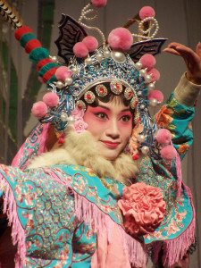

FOREDRAG OG WORKSHOP I KUN QU OPERA
- Kategori:
- Kurs og workshops
Kurs og workshops
Åpent for profesjonelle skuespillere, dvs. treårig utdanning i skuespillerkunst eller tilsvarende profesjonell erfaring. - Dato:
- 27.09.2016 til 27.09.2016
- Start kl :
- 09:00
- Slutt kl :
- 13:00
- Pris:
- 200,-
- Adresse:
- Formidlingssenteret, Operaen , Oslo

{kind=link}
En unik mulighet til å få et innblikk i og presentasjon av en av verdens eldste kunstformer som er på Unescos Verdensarv-liste.
- med Li Hianglong og Michelle Xiao Yan fra Jiangsu Kunqu Opera.
Kun Qu Opera er kjent for sitt virtuose rytme-system, changqiang, og har hatt betydelig innvirkning på senere former i Kinesisk Opera, som Sichuan og Peking Opera.
Kun Qu Opera stammer fra Ming-dynastiet på 14. til 1700tallet, og er en av de eldste formene i Kinesisk Opera som fremdeles fremføres i dag.
Kun Qu Opera er karakteristisk i stilen med sin dynamiske struktur og melodi (kunqiang), og klassiske stykker som the Peony Pavilion og the Hall of Longevity.
Den kombinerer sang og et komplekst system med koreografisk teknikk, akrobatikk og symbolske gester. Kun Qu Opera har stereotyper med karakterer som: de unge, den gamle, de komiske, og er kledd i tradisjonelle kostymer og sminke.
Sangene akkompagneres av tradisjonelle kinesiske instrumenter som alle brukes for å understreke handlinger og følelser på scenen.
Program:
Kl 09.30-10.45 : Presentasjon og foredrag om Kun Qu Opera med Michelle Xiao Yan, produsent, og Li Hianglong, skuespiller og leder ved Jiangsu Kunqu Opera i Nanjing, Kina.
Kl 11-13 : Åpen Workshop med Li Hianglong. Han demonstrerer og gir en innføring i systemene i tekst, rytme og sang, det fysiske uttrykket og karakter.
Det er valgfritt om man vil delta aktivt i workshopen.
Foredrag og Workshop foregår på engelsk.
Pris : kr 200/studenter kr 100
Påmelding til kari@teaterjoker.no innen 20.09.
VELKOMMEN!
{kind=link}
Kort presentasjon av Li Hianglong og Michelle Xiao Yan:
Mr. Li Hianglong:
Li Hianglong er svært anerkjent i Kina og har opptrådt på store scener i England, Japan, Tyskland og Frankrike, Hong Kong, Macau og Taiwan. Han har undervist i Kunqu Opera ved Tsinghua University, Beijing University og City University of Hong Kong. Li Hinaglong er, ved siden av å være utøver, også President for Jiangsu Performing Arts Group Ltd. Kunqu Theatre, Viseformann og Administrativ Leder ved Kunshan Contemporary Kunqu Theatre.
Ms Michelle Xiao Yan:
Michelle Xiao Yan er leder for Nanjing Xinyufang Culture & Media Ltd., og driver Yu Theatre Workshop i Nanjing. Hun kommer rett fra oppdrag som produsent for the London Design Festival “Nanjing Week”, med spesielt ansvar for Handan Dream , et nytt konsept innen Kunqu performance.
Xiao Yan er også professor ved Nanjing University of the Arts.
Michelle Xiao Yan er svært anerkjent for sitt arbeid, og har produsert en rekke prosjekt innen teater, Kunqu Opera, film, dokumentar, media og offentlige kunst-prosjekter.
Xiao Yan er initiativtaker til samarbeid med det norske kompaniet, Teater Joker, hvor man bruker kompaniets signaturform seriemime i arbeid med fattige og foreldreløse barn og unge i Kina.
Dette prosjektet er det første teater-baserte veldedighetsprosjekt i Kina, og fått mye medieoppmerksomhet.
Arrangør : Teater Joker, i samarbeid med Den Norske Opera og Norsk Skuespillersenter.
Besøket er støttet av Teater Joker, Det Norske Generalkonsulatet i Shanghai, Den Norske Opera & Ballett og Høyskolen i Oslo og Akershus.